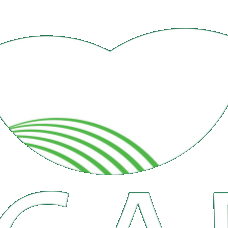

<!DOCTYPE html>
<html lang="pt-BR">
<head>
<meta charset="UTF-8" />
<meta name="viewport" content="width=device-width, initial-scale=1.0" />
<title>Car Framework — Agent Hub</title>
<link rel="stylesheet" href="ds/styles.css" />
<style>
  html, body { background: var(--bg-base); }
  .hero {
    position: relative; overflow: hidden;
    border: 1px solid var(--border-subtle); border-radius: var(--radius-lg);
    background:
      radial-gradient(120% 140% at 88% -20%, rgba(47,211,154,.10), transparent 55%),
      linear-gradient(180deg, var(--forest-800), var(--surface-card));
    padding: 30px 32px;
  }
  .hero::after {
    content: ""; position: absolute; right: -40px; top: -40px; width: 280px; height: 280px;
    background: url("ds/assets/leaf-mark-cut.png") no-repeat center/contain;
    opacity: .06; pointer-events: none;
  }
  .eyebrow {
    text-transform: uppercase; letter-spacing: var(--tracking-eyebrow);
    font: var(--fw-semibold) var(--text-xs) var(--font-sans); color: var(--leaf-500);
  }
  .hero h1 { font: var(--fw-bold) 40px/1.05 var(--font-display); color: var(--text-strong); letter-spacing: -.03em; margin: 10px 0 0; }
  .hero h1 em { font-style: normal; color: var(--accent); }
  .hero p { font: 16px/1.5 var(--font-sans); color: var(--text-muted); margin: 12px 0 0; max-width: 560px; }
  .sec-head { display: flex; align-items: center; gap: 10px; margin: 32px 0 16px; }
  .sec-head h2 { font: var(--fw-bold) 15px var(--font-display); color: var(--text-strong); letter-spacing: .01em; }
  .sec-head .count { font: var(--fw-bold) 11px var(--font-mono); color: var(--text-faint); }
  .sec-head .rule { flex: 1; height: 1px; background: var(--border-hairline); }
  .grid { display: grid; grid-template-columns: 1fr 1fr; gap: 16px; }
  .foot { text-align: center; color: var(--text-faint); font: 12.5px/1.6 var(--font-sans); margin: 36px auto 8px; max-width: 640px; }
  .toast {
    position: fixed; bottom: 26px; left: 50%; transform: translateX(-50%) translateY(20px);
    background: var(--surface-raised); border: 1px solid var(--accent); color: var(--text-strong);
    border-radius: var(--radius-pill); padding: 11px 20px; display: flex; align-items: center; gap: 9px;
    font: var(--fw-semibold) 13px var(--font-sans); box-shadow: var(--glow-accent);
    opacity: 0; pointer-events: none; transition: opacity .25s, transform .25s; z-index: 60;
  }
  .toast.show { opacity: 1; transform: translateX(-50%) translateY(0); }
  [data-lucide] { width: 16px; height: 16px; }
  @media (max-width: 960px) { .grid { grid-template-columns: 1fr; } }
  @keyframes pulse-dot { 0%,100%{opacity:1} 50%{opacity:.4} }
</style>
</head>
<body>
  <div id="root"></div>

  <script src="https://unpkg.com/react@18.3.1/umd/react.production.min.js" crossorigin></script>
  <script src="https://unpkg.com/react-dom@18.3.1/umd/react-dom.production.min.js" crossorigin></script>
  <script src="https://unpkg.com/@babel/standalone@7.29.0/babel.min.js" crossorigin></script>
  <script src="https://unpkg.com/lucide@0.456.0/dist/umd/lucide.min.js" crossorigin></script>
  <script src="ds/_ds_bundle.js"></script>

  <script>
    const API_AGENTES = "http://127.0.0.1:8000/agentes";
    const API_ANALISE = "http://127.0.0.1:8000/analise/demo";

    const ENRICH = {
      compadre: {
        title: "Compadre", persona: "Seu Raimundo (produtor)", icon: "message-circle",
        tone: "pine", author: "Car Framework",
        detalhe: "Primeiro agente da plataforma. Conversa em linguagem simples, lê a situação do imóvel no SICAR e traduz cada pendência com a regra do Código Florestal por trás.",
        rastro: { source: "Lei 12.651/2012, Art. 29, §1º", trace: "car:Pendencia_CIB" },
      },
      professor: {
        title: "Professor", persona: "Todos (produtor, técnico, analista)", icon: "graduation-cap",
        tone: "leaf", author: "Car Framework",
        detalhe: "Explica o Código Florestal em linguagem livre, adaptando o nível ao usuário. Usa a ontologia como base da verdade e pode elaborar além dos dados.",
        rastro: { source: "Lei 12.651/2012, Art. 3º, II", trace: "car:ConceitoAPP" },
      },
      auditor: {
        title: "Auditor", persona: "Luana (analista ambiental)", icon: "search-check",
        tone: "emerald", author: "OEMA / parceria",
        detalhe: "Cruza a geometria do imóvel com a ontologia e monta um rascunho de parecer técnico, já com as fontes legais citadas.",
        rastro: { source: "Lei 12.651/2012, Art. 12", trace: "car:ReservaLegal" },
      },
      territorial: {
        title: "Territorial", persona: "Gestor público", icon: "map",
        tone: "leaf", author: "Governo (piloto)",
        detalhe: "Agrega a mesma camada semântica em escala municipal: onde está o passivo ambiental e quanto falta regularizar.",
        rastro: { source: "Lei 12.651/2012, Art. 12, §4º", trace: "car:DeficitRL_municipio" },
      },
      credito: {
        title: "Crédito", persona: "Cooperativa de crédito", icon: "coins",
        tone: "amber", author: "Cooperativa (piloto)",
        detalhe: "Lê o CAR regularizado e identifica quais produtores destravam linhas de crédito verde (Pronaf Eco, PSA).",
        rastro: { source: "Resolução BCB nº 140/2021", trace: "car:ElegibilidadeCredito" },
      },
      oportunidades: {
        title: "Oportunidades", persona: "Produtor · cooperativa", icon: "sprout",
        tone: "leaf", author: "Cooperativa (piloto)",
        detalhe: "Mapeia programas e benefícios que o CAR regular libera para o produtor — crédito, PSA, CRA — e avalia a elegibilidade.",
        rastro: { source: "Lei 12.651/2012, Art. 41", trace: "car:Beneficio_PSA" },
      },
      comunicador: {
        title: "Comunicador", persona: "Governo (OEMAs, MDA)", icon: "megaphone",
        tone: "emerald", author: "Governo (piloto)",
        detalhe: "Envia campanhas, lembretes e notificações sobre o CAR em escala, personalizadas pela situação real de cada imóvel.",
        rastro: { source: "Lei 12.651/2012, Art. 29, §3º", trace: "car:Notificacao" },
      },
    };

    function enrich(a) {
      const e = ENRICH[a.name] || {
        title: a.name.charAt(0).toUpperCase() + a.name.slice(1),
        persona: "—", icon: "bot", tone: "surface", author: "comunidade",
        detalhe: a.description || "", rastro: { source: "—", trace: "car:—" },
      };
      return Object.assign({}, e, {
        name: a.name,
        description: a.description || e.detalhe,
        tools: a.tools || [],
        operacional: !!a.operacional,
      });
    }

    const FALLBACK_AGENTES = [
      { name: "compadre", description: "Ajuda o produtor rural a entender e corrigir o CAR pelo WhatsApp.", tools: ["consultar_sicar","consultar_ontologia","traduzir_llm"], operacional: true },
      { name: "professor", description: "Tira dúvidas sobre o Código Florestal em linguagem livre.", tools: ["consultar_legislacao","explicar_conceitos","gerar_exemplos"], operacional: true },
      { name: "auditor", description: "Ajuda o analista do OEMA a checar pendências e gerar parecer.", tools: ["consultar_sicar","consultar_ontologia","analise_espacial"], operacional: false },
      { name: "territorial", description: "Déficit de Reserva Legal por município, para o governo.", tools: ["consultar_ontologia","analise_espacial"], operacional: false },
      { name: "credito", description: "Carteira elegível a crédito verde, para cooperativas.", tools: ["consultar_ontologia","scoring"], operacional: false },
      { name: "oportunidades", description: "Mapeia programas e benefícios que o CAR regular libera.", tools: ["consultar_ontologia","buscar_programas","scoring"], operacional: false },
      { name: "comunicador", description: "Envia campanhas e lembretes personalizados sobre o CAR.", tools: ["consultar_ontologia","enviar_whatsapp","campanhas"], operacional: false },
    ];

    const FALLBACK_ANALISE = {
      faixa_exigida_m: 30, deficit_m2: 41900, deficit_ha: 4.19, conforme: false,
      fonte: "Lei 12.651/2012, Art. 4º, I, alínea a", rastro_ontologia: "car:FaixaAPP_ate10",
    };
  </script>

  <script type="text/babel">
    const { Card, Avatar, Badge, Tag, Button, Metric, TraceSeal } = window.TerraComumDesignSystem_e77cb3;

    /* ---------- NavItem ---------- */
    function NavItem({ icon, label, active, badge, onClick }) {
      const [hover, setHover] = React.useState(false);
      return (
        <button onClick={onClick} onMouseEnter={() => setHover(true)} onMouseLeave={() => setHover(false)}
          style={{ display: "flex", alignItems: "center", gap: 11, width: "100%", padding: "9px 12px",
            borderRadius: "var(--radius-sm)", border: "1px solid " + (active ? "var(--border-subtle)" : "transparent"),
            background: active ? "var(--surface-card)" : (hover ? "rgba(255,255,255,.04)" : "transparent"),
            color: active ? "var(--text-strong)" : "var(--text-muted)",
            font: "var(--fw-semibold) var(--text-sm)/1 var(--font-sans)", cursor: "pointer", textAlign: "left",
            transition: "background .15s, color .15s" }}>
          <i data-lucide={icon} style={{ width: 17, height: 17, color: active ? "var(--accent)" : "currentColor", flex: "none" }}></i>
          <span style={{ flex: 1 }}>{label}</span>
          {badge != null && <span style={{ font: "var(--fw-bold) 11px var(--font-mono)", color: active ? "var(--accent)" : "var(--text-faint)" }}>{badge}</span>}
        </button>
      );
    }

    const NAV_TITLES = {
      agentes: "Agentes",
      protocolo: "Protocolo",
      governanca: "Governança",
      ecossistemas: "Ecossistemas",
      documentacao: "Documentação",
      dpg: "Bem Público Digital",
    };

    /* ---------- HubShell ---------- */
    function HubShell({ children, nav, onNav, env, count, onNewAgent }) {
      React.useEffect(() => { window.lucide && lucide.createIcons(); });
      return (
        <div style={{ display: "grid", gridTemplateColumns: "248px 1fr", minHeight: "100vh", background: "var(--bg-base)" }}>
          <aside style={{ background: "var(--surface-inset)", borderRight: "1px solid var(--border-subtle)",
            display: "flex", flexDirection: "column", padding: "20px 16px", position: "sticky", top: 0, height: "100vh" }}>
            {/* Logo */}
            <div style={{ display: "flex", alignItems: "center", gap: 11, padding: "2px 6px 20px" }}>
              <span style={{ width: 38, height: 38, borderRadius: 11, background: "var(--pine-500)", display: "flex", alignItems: "center", justifyContent: "center", flex: "none", overflow: "hidden" }}>
                
              </span>
              <div style={{ lineHeight: 1.15 }}>
                <div style={{ font: "var(--fw-bold) 16px/1 var(--font-display)", color: "var(--text-strong)", letterSpacing: "-.02em" }}>
                  Car <span style={{ color: "var(--accent)" }}>Framework</span>
                </div>
                <div style={{ font: "var(--fw-semibold) 9.5px var(--font-sans)", letterSpacing: ".14em", textTransform: "uppercase", color: "var(--text-faint)", marginTop: 3 }}>Agent Hub</div>
              </div>
            </div>

            <div style={{ font: "var(--fw-semibold) 10px var(--font-sans)", letterSpacing: ".12em", textTransform: "uppercase", color: "var(--text-faint)", padding: "0 6px 8px" }}>Plataforma</div>
            <nav style={{ display: "flex", flexDirection: "column", gap: 3 }}>
              <NavItem icon="layout-grid" label="Agentes" badge={count} active={nav === "agentes"} onClick={() => onNav("agentes")} />
              <NavItem icon="git-fork" label="Protocolo" active={nav === "protocolo"} onClick={() => onNav("protocolo")} />
              <NavItem icon="shield-check" label="Governança" active={nav === "governanca"} onClick={() => onNav("governanca")} />
              <NavItem icon="globe-2" label="Ecossistemas" active={nav === "ecossistemas"} onClick={() => onNav("ecossistemas")} />
            </nav>

            <div style={{ marginTop: 18, font: "var(--fw-semibold) 10px var(--font-sans)", letterSpacing: ".12em", textTransform: "uppercase", color: "var(--text-faint)", padding: "0 6px 8px" }}>Aberto</div>
            <nav style={{ display: "flex", flexDirection: "column", gap: 3 }}>
              <NavItem icon="book-open" label="Documentação" active={nav === "documentacao"} onClick={() => onNav("documentacao")} />
              <NavItem icon="globe" label="Bem público (DPG)" active={nav === "dpg"} onClick={() => onNav("dpg")} />
            </nav>

            <div style={{ marginTop: "auto", paddingTop: 16 }}>
              <div style={{ background: "var(--surface-card)", border: "1px solid var(--border-subtle)", borderRadius: "var(--radius-md)", padding: "11px 12px" }}>
                <div style={{ display: "flex", alignItems: "center", gap: 7 }}>
                  <span style={{ width: 7, height: 7, borderRadius: "50%", background: "var(--accent)", boxShadow: "0 0 8px var(--accent)" }}></span>
                  <span style={{ font: "var(--fw-bold) 11px var(--font-sans)", color: "var(--text-body)" }}>protocolo carregado</span>
                </div>
                <code style={{ display: "block", font: "10.5px var(--font-mono)", color: "var(--text-faint)", marginTop: 6 }}>backend/ontologia/car.ttl</code>
              </div>
            </div>
          </aside>

          <div style={{ display: "flex", flexDirection: "column", minWidth: 0 }}>
            <header style={{ display: "flex", alignItems: "center", gap: 16, padding: "0 28px", height: 64,
              borderBottom: "1px solid var(--border-subtle)", background: "rgba(12,28,22,.72)", backdropFilter: "blur(10px)", position: "sticky", top: 0, zIndex: 5 }}>
              <div style={{ font: "var(--fw-bold) 15px var(--font-display)", color: "var(--text-strong)" }}>
                {NAV_TITLES[nav] || "Hub"}
              </div>
              <div style={{ flex: 1 }}></div>
              <label style={{ display: "flex", alignItems: "center", gap: 8, background: "var(--surface-inset)", border: "1px solid var(--border-subtle)", borderRadius: "var(--radius-pill)", padding: "7px 14px", width: 260, color: "var(--text-faint)" }}>
                <i data-lucide="search" style={{ width: 15, height: 15 }}></i>
                <input placeholder="Buscar agente ou regra…" style={{ border: "none", background: "transparent", outline: "none", color: "var(--text-body)", font: "13px var(--font-sans)", flex: 1 }} />
              </label>
              <Badge tone={env === "ao vivo" ? "active" : "muted"} dot>{env || "demo"}</Badge>
              <Button variant="primary" size="sm" icon={<i data-lucide="plus"></i>} onClick={onNewAgent}>Publicar agente</Button>
            </header>

            {env !== "ao vivo" && (
              <div style={{ display: "flex", alignItems: "center", gap: 10, padding: "9px 28px", background: "rgba(245,166,35,.07)", borderBottom: "1px solid rgba(245,166,35,.18)" }}>
                <i data-lucide="info" style={{ width: 14, height: 14, color: "#F5A623", flex: "none" }}></i>
                <span style={{ font: "12.5px var(--font-sans)", color: "rgba(245,166,35,.85)" }}>
                  <strong>Modo demonstração</strong> — backend não conectado. Os dados exibidos são saída real do sistema rodando localmente; esta visualização estática é para GitHub Pages.
                </span>
              </div>
            )}
            <main style={{ padding: "28px", flex: 1, maxWidth: 1180, width: "100%" }}>{children}</main>
          </div>
        </div>
      );
    }

    /* ---------- AgentCard ---------- */
    function AgentCard({ agent, selected, onOpen, onSelect }) {
      React.useEffect(() => { window.lucide && lucide.createIcons(); });
      return (
        <Card active={selected} interactive onClick={() => onSelect && onSelect(agent.name)} style={{ cursor: "pointer", display: "flex", flexDirection: "column" }}>
          <div style={{ display: "flex", alignItems: "flex-start", gap: 12 }}>
            <Avatar tone={agent.tone} size={46} icon={<i data-lucide={agent.icon}></i>} />
            <div style={{ flex: 1, minWidth: 0 }}>
              <div style={{ display: "flex", alignItems: "center", gap: 8 }}>
                <span style={{ font: "var(--fw-bold) 17px var(--font-display)", color: "var(--text-strong)", letterSpacing: "-.01em" }}>{agent.title}</span>
                {agent.operacional ? <Badge tone="active" dot>ativo</Badge> : <Badge tone="muted">demonstrativo</Badge>}
              </div>
              <div style={{ font: "12px var(--font-sans)", color: "var(--text-faint)", marginTop: 3 }}>para: {agent.persona}</div>
            </div>
          </div>
          <p style={{ font: "13.5px/1.5 var(--font-sans)", color: "var(--text-body)", margin: "13px 0 0" }}>{agent.description}</p>
          <div style={{ display: "flex", gap: 6, flexWrap: "wrap", margin: "13px 0 0" }}>
            {agent.tools.map((t) => <Tag key={t}>{t}</Tag>)}
          </div>
          <div style={{ display: "flex", alignItems: "center", gap: 10, marginTop: 15, paddingTop: 14, borderTop: "1px solid var(--border-hairline)" }}>
            <span style={{ font: "11px var(--font-sans)", color: "var(--text-faint)", display: "flex", alignItems: "center", gap: 5 }}>
              <i data-lucide="user-round" style={{ width: 13, height: 13 }}></i>{agent.author}
            </span>
            <div style={{ flex: 1 }}></div>
            {agent.operacional
              ? <Button variant="primary" size="sm" iconRight={<i data-lucide="arrow-right"></i>} onClick={(e) => { e.stopPropagation(); onOpen && onOpen(agent); }}>Abrir</Button>
              : <Button variant="ghost" size="sm" onClick={(e) => { e.stopPropagation(); onSelect && onSelect(agent.name); }}>Detalhes</Button>}
          </div>
        </Card>
      );
    }

    /* ---------- ProtocoloBanner ---------- */
    function ProtocoloBanner() {
      React.useEffect(() => { window.lucide && lucide.createIcons(); });
      return (
        <div style={{ display: "flex", alignItems: "center", gap: 16, marginTop: 18,
          background: "linear-gradient(90deg, rgba(1,105,59,.30), var(--surface-card))",
          border: "1px solid var(--border-subtle)", borderLeft: "3px solid var(--leaf-500)",
          borderRadius: "var(--radius-md)", padding: "16px 20px" }}>
          <i data-lucide="git-fork" style={{ width: 22, height: 22, color: "var(--leaf-500)", flex: "none" }}></i>
          <div style={{ flex: 1 }}>
            <div style={{ font: "var(--fw-semibold) 14.5px var(--font-sans)", color: "var(--text-strong)" }}>
              Todos os agentes raciocinam sobre o <span style={{ color: "var(--leaf-400)" }}>mesmo protocolo do CAR</span>.
            </div>
            <code style={{ font: "11.5px var(--font-mono)", color: "var(--text-faint)" }}>backend/ontologia/car.ttl — regras do Código Florestal, rastreáveis</code>
          </div>
        </div>
      );
    }

    /* ---------- AgentDetail ---------- */
    function FieldLabel({ icon, label }) {
      return (
        <div style={{ display: "flex", alignItems: "center", gap: 7, font: "var(--fw-semibold) 10.5px var(--font-sans)", letterSpacing: ".1em", textTransform: "uppercase", color: "var(--text-faint)" }}>
          <i data-lucide={icon} style={{ width: 13, height: 13 }}></i>{label}
        </div>
      );
    }
    function Field({ label, icon, children }) {
      return (<div><FieldLabel icon={icon} label={label} /><p style={{ font: "14px/1.55 var(--font-sans)", color: "var(--text-body)", margin: "8px 0 0" }}>{children}</p></div>);
    }
    function AgentDetail({ agent, onClose, onOpen }) {
      React.useEffect(() => { window.lucide && lucide.createIcons(); });
      const open = !!agent;
      return (
        <>
          <div onClick={onClose} style={{ position: "fixed", inset: 0, background: "rgba(6,16,12,.55)", backdropFilter: "blur(2px)",
            opacity: open ? 1 : 0, pointerEvents: open ? "auto" : "none", transition: "opacity .25s", zIndex: 40 }}></div>
          <aside style={{ position: "fixed", top: 0, right: 0, height: "100vh", width: 420, maxWidth: "92vw",
            background: "var(--bg-canvas)", borderLeft: "1px solid var(--border-subtle)", boxShadow: "var(--shadow-lg)", zIndex: 41,
            transform: open ? "translateX(0)" : "translateX(100%)", transition: "transform .3s var(--ease-out)", display: "flex", flexDirection: "column" }}>
            {agent && (
              <>
                <div style={{ display: "flex", alignItems: "center", gap: 12, padding: "20px 22px", borderBottom: "1px solid var(--border-subtle)" }}>
                  <Avatar tone={agent.tone} size={48} icon={<i data-lucide={agent.icon}></i>} />
                  <div style={{ flex: 1 }}>
                    <div style={{ display: "flex", alignItems: "center", gap: 8 }}>
                      <span style={{ font: "var(--fw-bold) 20px var(--font-display)", color: "var(--text-strong)" }}>{agent.title}</span>
                      {agent.operacional ? <Badge tone="active" dot>ativo</Badge> : <Badge tone="muted">demonstrativo</Badge>}
                    </div>
                    <code style={{ font: "11px var(--font-mono)", color: "var(--text-faint)" }}>{agent.name}.yaml</code>
                  </div>
                  <button onClick={onClose} style={{ border: "none", background: "transparent", color: "var(--text-muted)", cursor: "pointer", padding: 4, display: "flex" }}>
                    <i data-lucide="x" style={{ width: 20, height: 20 }}></i>
                  </button>
                </div>
                <div style={{ padding: "22px", overflowY: "auto", flex: 1, display: "flex", flexDirection: "column", gap: 20 }}>
                  <Field label="Para quem" icon="user-round">{agent.persona}</Field>
                  <Field label="O que faz" icon="sparkles">{agent.detalhe}</Field>
                  <div>
                    <FieldLabel icon="wrench" label="Ferramentas" />
                    <div style={{ display: "flex", gap: 6, flexWrap: "wrap", marginTop: 9 }}>{agent.tools.map((t) => <Tag key={t}>{t}</Tag>)}</div>
                  </div>
                  <div>
                    <FieldLabel icon="shield-check" label="Exemplo de rastreabilidade" />
                    <div style={{ marginTop: 9 }}><TraceSeal icon={<i data-lucide="book-open"></i>} source={agent.rastro.source} trace={agent.rastro.trace} /></div>
                  </div>
                  <div style={{ background: "var(--surface-inset)", border: "1px solid var(--border-subtle)", borderRadius: "var(--radius-md)", padding: "13px 15px" }}>
                    <div style={{ display: "flex", alignItems: "center", gap: 8, font: "12px var(--font-sans)", color: "var(--text-muted)" }}>
                      <i data-lucide="git-fork" style={{ width: 15, height: 15, color: "var(--accent)" }}></i>
                      Raciocina sobre <code style={{ font: "11.5px var(--font-mono)", color: "var(--mint-400)" }}>car.ttl</code> — o protocolo compartilhado de todos os agentes.
                    </div>
                  </div>
                </div>
                <div style={{ padding: "16px 22px", borderTop: "1px solid var(--border-subtle)", display: "flex", gap: 10 }}>
                  {agent.operacional
                    ? <Button variant="primary" iconRight={<i data-lucide="arrow-right"></i>} onClick={() => onOpen && onOpen(agent)} style={{ flex: 1 }}>Abrir o {agent.title}</Button>
                    : <Button variant="secondary" icon={<i data-lucide="rocket"></i>} style={{ flex: 1 }}>Solicitar piloto</Button>}
                </div>
              </>
            )}
          </aside>
        </>
      );
    }

    /* =====================================================
       PROTOCOLO PAGE
    ===================================================== */
    function ProtocoloPage() {
      React.useEffect(() => { window.lucide && lucide.createIcons(); });

      const fontes = [
        { name: "SIGEF / INCRA", icon: "map-pin", desc: "Georreferenciamento oficial de imóveis rurais — polígonos certificados pelo governo federal", tipo: "Geoespacial", cor: "#2FD39A" },
        { name: "MapBiomas", icon: "layers", desc: "Cobertura e uso do solo com histórico anual — base para calcular vegetação nativa remanescente", tipo: "Cobertura vegetal", cor: "#7DD49A" },
        { name: "RER (SFB)", icon: "database", desc: "Registro ambiental rural open-source do Serviço Florestal Brasileiro — instância própria em Docker", tipo: "Cadastral", cor: "#4FC3A0" },
        { name: "SICAR / Portal CAR", icon: "file-text", desc: "Cadastros públicos, situação do imóvel e pendências declaratórias por estado", tipo: "Declaratório", cor: "#A8D8B0" },
        { name: "Lei 12.651/2012", icon: "book-open", desc: "Código Florestal — fonte primária das regras de APP, Reserva Legal, biomas e benefícios", tipo: "Legal", cor: "#2FD39A" },
      ];

      const conceitos = [
        { uri: "car:AreaPreservacaoPermanente", label: "Área de Preservação Permanente", fonte: "Art. 3º, II" },
        { uri: "car:ReservaLegal", label: "Reserva Legal", fonte: "Art. 12" },
        { uri: "car:FaixaAPP_ate10", label: "Faixa APP ≤ 10m", fonte: "Art. 4º, I, a" },
        { uri: "car:Pendencia_CIB", label: "Pendência CIB", fonte: "Art. 29, §1º" },
        { uri: "car:Beneficio_PSA", label: "Pagamento por Serviços Ambientais", fonte: "Art. 41" },
        { uri: "car:ElegibilidadeCredito", label: "Elegibilidade Crédito Verde", fonte: "Res. BCB 140/2021" },
        { uri: "car:DeficitRL_municipio", label: "Déficit de RL por município", fonte: "Art. 12, §4º" },
        { uri: "car:Notificacao", label: "Notificação de pendência", fonte: "Art. 29, §3º" },
      ];

      const camadas = [
        { n: "01", title: "Fontes abertas", desc: "SIGEF, MapBiomas, RER, SICAR — dados públicos com licença aberta", icon: "database" },
        { n: "02", title: "Camada semântica", desc: "car.ttl — ontologia do Código Florestal. Regras vira triples RDF, não texto", icon: "git-fork" },
        { n: "03", title: "Agent Hub", desc: "Manifestos YAML ativam agentes. Troca o manifesto, muda o agente — sem mexer no código", icon: "cpu" },
        { n: "04", title: "Interfaces", desc: "WhatsApp (Compadre), API REST, Hub web — cada canal consome a mesma camada", icon: "layers" },
      ];

      return (
        <div style={{ display: "flex", flexDirection: "column", gap: 28 }}>
          {/* Hero */}
          <div className="hero">
            <div className="eyebrow">Camada semântica aberta do território</div>
            <h1>O <em>Protocolo</em></h1>
            <p>Uma ontologia do Código Florestal + um hub de agentes. Qualquer organização publica um agente. Todos raciocinam sobre a mesma verdade — rastreável, auditável, aberta.</p>
          </div>

          {/* Architecture flow */}
          <div>
            <div className="sec-head"><h2>Arquitetura em camadas</h2><span className="rule"></span></div>
            <div style={{ display: "grid", gridTemplateColumns: "repeat(4, 1fr)", gap: 12 }}>
              {camadas.map((c) => (
                <div key={c.n} style={{ background: "var(--surface-card)", border: "1px solid var(--border-subtle)", borderRadius: "var(--radius-md)", padding: "18px 16px", position: "relative" }}>
                  <div style={{ font: "var(--fw-bold) 28px/1 var(--font-mono)", color: "rgba(47,211,154,.15)", position: "absolute", top: 12, right: 14 }}>{c.n}</div>
                  <i data-lucide={c.icon} style={{ width: 22, height: 22, color: "var(--accent)", marginBottom: 10 }}></i>
                  <div style={{ font: "var(--fw-bold) 14px var(--font-display)", color: "var(--text-strong)", marginBottom: 6 }}>{c.title}</div>
                  <p style={{ font: "12.5px/1.5 var(--font-sans)", color: "var(--text-muted)", margin: 0 }}>{c.desc}</p>
                </div>
              ))}
            </div>
            {/* Arrow connectors */}
            <div style={{ display: "grid", gridTemplateColumns: "repeat(3, 1fr)", gap: 12, margin: "0 calc(25% + 6px)", marginTop: -4 }}>
              {[0,1,2].map(i => (
                <div key={i} style={{ textAlign: "center", color: "var(--accent)", fontSize: 18 }}>→</div>
              ))}
            </div>
          </div>

          {/* Data sources */}
          <div>
            <div className="sec-head"><h2>Origens dos dados</h2><span className="count">{fontes.length}</span><span className="rule"></span><span style={{ font: "12px var(--font-sans)", color: "var(--text-faint)" }}>todas públicas · licença aberta</span></div>
            <div style={{ display: "flex", flexDirection: "column", gap: 10 }}>
              {fontes.map((f) => (
                <div key={f.name} style={{ display: "flex", alignItems: "center", gap: 16, background: "var(--surface-card)", border: "1px solid var(--border-subtle)", borderRadius: "var(--radius-md)", padding: "14px 18px" }}>
                  <div style={{ width: 38, height: 38, borderRadius: 10, background: "rgba(47,211,154,.10)", border: "1px solid rgba(47,211,154,.15)", display: "flex", alignItems: "center", justifyContent: "center", flex: "none" }}>
                    <i data-lucide={f.icon} style={{ width: 18, height: 18, color: "var(--accent)" }}></i>
                  </div>
                  <div style={{ flex: 1 }}>
                    <div style={{ font: "var(--fw-semibold) 14px var(--font-sans)", color: "var(--text-strong)" }}>{f.name}</div>
                    <div style={{ font: "12.5px var(--font-sans)", color: "var(--text-muted)", marginTop: 2 }}>{f.desc}</div>
                  </div>
                  <span style={{ font: "var(--fw-semibold) 10.5px var(--font-sans)", color: "var(--text-faint)", background: "var(--surface-inset)", border: "1px solid var(--border-hairline)", borderRadius: "var(--radius-pill)", padding: "3px 9px", whiteSpace: "nowrap" }}>{f.tipo}</span>
                </div>
              ))}
            </div>
          </div>

          {/* Ontology concepts */}
          <div>
            <div className="sec-head"><h2>Conceitos da ontologia</h2><span className="count">{conceitos.length}</span><span className="rule"></span><code style={{ font: "11px var(--font-mono)", color: "var(--text-faint)" }}>car.ttl</code></div>
            <div style={{ display: "grid", gridTemplateColumns: "1fr 1fr", gap: 8 }}>
              {conceitos.map((c) => (
                <div key={c.uri} style={{ display: "flex", alignItems: "center", gap: 12, background: "var(--surface-inset)", border: "1px solid var(--border-hairline)", borderRadius: "var(--radius-sm)", padding: "10px 14px" }}>
                  <div style={{ flex: 1 }}>
                    <code style={{ font: "11.5px var(--font-mono)", color: "var(--mint-400)" }}>{c.uri}</code>
                    <div style={{ font: "12.5px var(--font-sans)", color: "var(--text-body)", marginTop: 3 }}>{c.label}</div>
                  </div>
                  <span style={{ font: "10.5px var(--font-mono)", color: "var(--text-faint)", whiteSpace: "nowrap" }}>{c.fonte}</span>
                </div>
              ))}
            </div>
          </div>

          {/* Why ontology matters */}
          <div style={{ background: "linear-gradient(135deg, rgba(1,105,59,.15), transparent)", border: "1px solid var(--border-subtle)", borderRadius: "var(--radius-lg)", padding: "24px 28px" }}>
            <div style={{ font: "var(--fw-bold) 16px var(--font-display)", color: "var(--text-strong)", marginBottom: 10 }}>
              Por que ontologia e não só texto?
            </div>
            <p style={{ font: "14px/1.6 var(--font-sans)", color: "var(--text-muted)", margin: 0 }}>
              Chatbots respondem com base em probabilidade. O Car Framework responde com base em <strong style={{ color: "var(--text-body)" }}>raciocínio sobre grafo</strong>: cada resposta cita a regra concreta, vinda da ontologia — nunca inventada pelo LLM. Isso é auditável, contestável, confiável. O mesmo raciocínio serve o produtor, o analista, o banco e o governo — sem contradição.
            </p>
          </div>
        </div>
      );
    }

    /* =====================================================
       GOVERNANÇA PAGE
    ===================================================== */
    function GovernancaPage() {
      React.useEffect(() => { window.lucide && lucide.createIcons(); });

      const papeis = [
        {
          title: "Produtor Rural", icon: "tractor", cor: "amber", tag: "Persona primária",
          desc: "Consulta, corrige e acompanha o CAR via agentes autorizados. Sem senha técnica, sem SICAR diretamente.",
          perms: ["Conversar com o Compadre (WhatsApp)", "Receber tradução das pendências", "Ver benefícios disponíveis (PSA, crédito)", "Acompanhar status do imóvel"],
          bloqueios: ["Editar dados de terceiros", "Acessar painel de analistas"],
        },
        {
          title: "Analista OEMA", icon: "search-check", cor: "emerald", tag: "Persona secundária",
          desc: "Valida cadastros e gera pareceres técnicos com rastreabilidade. Recebe CARs mais limpos, menos retrabalho.",
          perms: ["Agente Auditor (parecer técnico)", "Ver geometria × ontologia cruzados", "Exportar rastro legal por imóvel"],
          bloqueios: ["Modificar ontologia", "Publicar agentes"],
        },
        {
          title: "Governo / MDA", icon: "landmark", cor: "pine", tag: "Piloto",
          desc: "Gestão de campanhas, políticas e monitoramento territorial em escala municipal e estadual.",
          perms: ["Agente Comunicador (campanhas)", "Agente Territorial (déficit por município)", "Publicar agentes governamentais", "Acesso à API de análise territorial"],
          bloqueios: [],
        },
        {
          title: "Cooperativas", icon: "building-2", cor: "leaf", tag: "Piloto",
          desc: "Acessa carteira elegível a crédito verde e oportunidades de programas ambientais.",
          perms: ["Agente Crédito (Pronaf Eco, PSA)", "Agente Oportunidades (CRA, benefícios)", "Publicar agente cooperativo"],
          bloqueios: ["Acesso a dados individuais sem consentimento"],
        },
        {
          title: "Pesquisa / OSC", icon: "flask-conical", cor: "emerald", tag: "Aberto",
          desc: "Contribui com novos agentes e extensões da ontologia. Motor da inovação na plataforma.",
          perms: ["Publicar agentes open-source", "Propor extensões do car.ttl", "Acesso completo à API pública", "Fork e instância própria"],
          bloqueios: [],
        },
      ];

      const compromisos = [
        { icon: "code-2", title: "Código aberto", desc: "Ontologia, Agent Hub e Compadre sob Apache 2.0. Qualquer um inspeciona, bifurca, melhora." },
        { icon: "database", title: "Dados abertos", desc: "Apenas bases públicas e com licença Creative Commons. Nenhum dado pessoal do produtor neste repositório." },
        { icon: "server", title: "Auto-hospedável", desc: "Construído sobre o RER do governo (Docker). Qualquer estado roda a sua própria instância." },
        { icon: "globe", title: "Bem Público Digital", desc: "Alinhado ao padrão DPG da ONU. Adaptável para outros países e outros códigos florestais." },
      ];

      const toneColor = { amber: "#F5A623", emerald: "#2FD39A", pine: "#016939", leaf: "#4CAF73" };

      return (
        <div style={{ display: "flex", flexDirection: "column", gap: 28 }}>
          <div className="hero">
            <div className="eyebrow">Modelo de acesso e responsabilidade</div>
            <h1>Governança <em>aberta</em></h1>
            <p>Quem pode fazer o quê na plataforma — papéis, permissões e o compromisso com o Bem Público Digital. A plataforma é aberta; o acesso é proporcional à responsabilidade.</p>
          </div>

          {/* Roles */}
          <div>
            <div className="sec-head"><h2>Papéis e autorizações</h2><span className="count">{papeis.length}</span><span className="rule"></span></div>
            <div style={{ display: "flex", flexDirection: "column", gap: 14 }}>
              {papeis.map((p) => (
                <div key={p.title} style={{ background: "var(--surface-card)", border: "1px solid var(--border-subtle)", borderRadius: "var(--radius-lg)", overflow: "hidden" }}>
                  <div style={{ display: "flex", alignItems: "center", gap: 14, padding: "18px 20px", borderBottom: "1px solid var(--border-hairline)" }}>
                    <div style={{ width: 42, height: 42, borderRadius: 12, background: `rgba(${p.cor === "amber" ? "245,166,35" : p.cor === "emerald" ? "47,211,154" : p.cor === "pine" ? "1,105,57" : "76,175,115"},.15)`, display: "flex", alignItems: "center", justifyContent: "center", flex: "none" }}>
                      <i data-lucide={p.icon} style={{ width: 20, height: 20, color: toneColor[p.cor] }}></i>
                    </div>
                    <div style={{ flex: 1 }}>
                      <div style={{ display: "flex", alignItems: "center", gap: 8 }}>
                        <span style={{ font: "var(--fw-bold) 16px var(--font-display)", color: "var(--text-strong)" }}>{p.title}</span>
                        <span style={{ font: "var(--fw-semibold) 10px var(--font-sans)", letterSpacing: ".1em", textTransform: "uppercase", color: "var(--text-faint)", background: "var(--surface-inset)", border: "1px solid var(--border-hairline)", borderRadius: "var(--radius-pill)", padding: "2px 8px" }}>{p.tag}</span>
                      </div>
                      <div style={{ font: "13px var(--font-sans)", color: "var(--text-muted)", marginTop: 3 }}>{p.desc}</div>
                    </div>
                  </div>
                  <div style={{ display: "grid", gridTemplateColumns: p.bloqueios.length ? "1fr 1fr" : "1fr", gap: 0 }}>
                    <div style={{ padding: "14px 20px" }}>
                      <div style={{ font: "var(--fw-semibold) 10.5px var(--font-sans)", letterSpacing: ".1em", textTransform: "uppercase", color: "var(--text-faint)", marginBottom: 8 }}>Autorizado</div>
                      {p.perms.map((pm) => (
                        <div key={pm} style={{ display: "flex", alignItems: "center", gap: 7, font: "13px var(--font-sans)", color: "var(--text-body)", marginBottom: 5 }}>
                          <i data-lucide="check" style={{ width: 13, height: 13, color: "var(--accent)", flex: "none" }}></i>{pm}
                        </div>
                      ))}
                    </div>
                    {p.bloqueios.length > 0 && (
                      <div style={{ padding: "14px 20px", borderLeft: "1px solid var(--border-hairline)" }}>
                        <div style={{ font: "var(--fw-semibold) 10.5px var(--font-sans)", letterSpacing: ".1em", textTransform: "uppercase", color: "var(--text-faint)", marginBottom: 8 }}>Restrito</div>
                        {p.bloqueios.map((bl) => (
                          <div key={bl} style={{ display: "flex", alignItems: "center", gap: 7, font: "13px var(--font-sans)", color: "var(--text-muted)", marginBottom: 5 }}>
                            <i data-lucide="x" style={{ width: 13, height: 13, color: "rgba(255,100,100,.6)", flex: "none" }}></i>{bl}
                          </div>
                        ))}
                      </div>
                    )}
                  </div>
                </div>
              ))}
            </div>
          </div>

          {/* DPG commitments */}
          <div>
            <div className="sec-head"><h2>Compromissos de bem público</h2><span className="rule"></span></div>
            <div style={{ display: "grid", gridTemplateColumns: "1fr 1fr", gap: 12 }}>
              {compromisos.map((c) => (
                <div key={c.title} style={{ background: "var(--surface-card)", border: "1px solid var(--border-subtle)", borderRadius: "var(--radius-md)", padding: "18px" }}>
                  <i data-lucide={c.icon} style={{ width: 20, height: 20, color: "var(--accent)", marginBottom: 10 }}></i>
                  <div style={{ font: "var(--fw-bold) 14px var(--font-display)", color: "var(--text-strong)", marginBottom: 6 }}>{c.title}</div>
                  <p style={{ font: "13px/1.5 var(--font-sans)", color: "var(--text-muted)", margin: 0 }}>{c.desc}</p>
                </div>
              ))}
            </div>
          </div>

          {/* Publish an agent CTA */}
          <div style={{ background: "linear-gradient(135deg, rgba(1,105,59,.20), rgba(5,82,51,.10))", border: "1px solid rgba(47,211,154,.2)", borderRadius: "var(--radius-lg)", padding: "24px 28px", display: "flex", alignItems: "center", gap: 20 }}>
            <div style={{ flex: 1 }}>
              <div style={{ font: "var(--fw-bold) 16px var(--font-display)", color: "var(--text-strong)", marginBottom: 6 }}>Quer publicar um agente?</div>
              <p style={{ font: "13.5px/1.5 var(--font-sans)", color: "var(--text-muted)", margin: 0 }}>
                Escreva um manifesto YAML, declare as ferramentas e os conceitos da ontologia que o agente usa. Sem precisar tocar no código central.
              </p>
            </div>
            <Button variant="primary" icon={<i data-lucide="plus"></i>}>Publicar agente</Button>
          </div>
        </div>
      );
    }

    /* =====================================================
       ECOSSISTEMAS PAGE  (territory map — ipêHub-inspired)
    ===================================================== */
    function EcossistemasPage() {
      React.useEffect(() => { window.lucide && lucide.createIcons(); });
      const [hoveredId, setHoveredId] = React.useState(null);
      const [selectedProp, setSelectedProp] = React.useState(null);

      const imoveis = [
        { id: "p1", x: 390, y: 268, name: "Sítio Três Rios", car: "MG-3102308-1F306…", ha: 41.7, status: "deficit", deficit_ha: 4.19, app_pct: 8.2 },
        { id: "p2", x: 640, y: 170, name: "Fazenda Boa Vista", car: "MG-3109451-2A44…", ha: 87.3, status: "conforme", deficit_ha: 0, app_pct: 14.1 },
        { id: "p3", x: 258, y: 370, name: "Sítio Santa Cruz", car: "MG-3156700-9C12…", ha: 23.1, status: "pendente", deficit_ha: 1.2, app_pct: 5.1 },
        { id: "p4", x: 790, y: 330, name: "Fazenda Alto Verde", car: "MG-3143906-7B89…", ha: 156.2, status: "conforme", deficit_ha: 0, app_pct: 18.3 },
        { id: "p5", x: 510, y: 420, name: "Sítio das Palmeiras", car: "MG-3131703-5D67…", ha: 18.9, status: "deficit", deficit_ha: 0.83, app_pct: 3.8 },
        { id: "p6", x: 165, y: 210, name: "Chácara São João", car: "MG-3117876-3E45…", ha: 12.4, status: "pendente", deficit_ha: 0.5, app_pct: 4.0 },
        { id: "p7", x: 900, y: 195, name: "Fazenda Cerrado", car: "MG-3129806-6F01…", ha: 243.8, status: "conforme", deficit_ha: 0, app_pct: 22.7 },
        { id: "p8", x: 680, y: 440, name: "Sítio Esperança", car: "MG-3148704-4A32…", ha: 31.5, status: "deficit", deficit_ha: 2.1, app_pct: 6.3 },
      ];

      const zonas = [
        { cx: 360, cy: 300, r: 110, label: "MATA CILIAR · RIO GRANDE", strokeColor: "rgba(47,211,154,.25)" },
        { cx: 720, cy: 240, r: 85, label: "RESERVA LEGAL · FAZENDA BOA VISTA", strokeColor: "rgba(100,200,150,.20)" },
        { cx: 510, cy: 390, r: 65, label: "APP · NASCENTE", strokeColor: "rgba(70,150,210,.22)" },
      ];

      const statusColor = { conforme: "#2FD39A", deficit: "#FF6B6B", pendente: "#F5A623" };
      const statusLabel = { conforme: "CAR conforme", deficit: "Déficit APP", pendente: "Pend. análise" };

      const totals = {
        total: imoveis.length,
        conformes: imoveis.filter(p => p.status === "conforme").length,
        deficit: imoveis.filter(p => p.status === "deficit").length,
        pendente: imoveis.filter(p => p.status === "pendente").length,
        ha: imoveis.reduce((s, p) => s + p.ha, 0).toFixed(1),
      };

      const sel = selectedProp ? imoveis.find(p => p.id === selectedProp) : null;

      return (
        <div style={{ display: "flex", flexDirection: "column", gap: 20 }}>
          {/* Header row */}
          <div style={{ display: "flex", alignItems: "flex-end", gap: 16 }}>
            <div style={{ flex: 1 }}>
              <div className="eyebrow">Visualização territorial</div>
              <h2 style={{ font: "var(--fw-bold) 26px/1.1 var(--font-display)", color: "var(--text-strong)", margin: "6px 0 0", letterSpacing: "-.02em" }}>
                Ecossistemas <span style={{ color: "var(--accent)" }}>· ao vivo</span>
              </h2>
            </div>
            <div style={{ display: "flex", gap: 20 }}>
              {["conforme","deficit","pendente"].map(s => (
                <div key={s} style={{ display: "flex", alignItems: "center", gap: 6 }}>
                  <span style={{ width: 8, height: 8, borderRadius: "50%", background: statusColor[s], boxShadow: `0 0 6px ${statusColor[s]}` }}></span>
                  <span style={{ font: "11.5px var(--font-sans)", color: "var(--text-faint)" }}>{statusLabel[s]}</span>
                </div>
              ))}
            </div>
          </div>

          {/* Map */}
          <div style={{ position: "relative", background: "#060F1A", borderRadius: "var(--radius-lg)", border: "1px solid rgba(100,200,180,.15)", overflow: "hidden" }}>
            {/* Top bar */}
            <div style={{ position: "absolute", top: 14, left: 16, zIndex: 10, display: "flex", alignItems: "center", gap: 8 }}>
              <span style={{ font: "var(--fw-bold) 10px var(--font-mono)", letterSpacing: ".18em", textTransform: "uppercase", color: "#7DD4C4" }}>TERRITÓRIO · CAR GRAPH</span>
              <span style={{ width: 6, height: 6, borderRadius: "50%", background: "#2FD39A", boxShadow: "0 0 8px #2FD39A", animation: "pulse-dot 2s infinite" }}></span>
            </div>

            {/* Zoom controls */}
            <div style={{ position: "absolute", top: 10, right: 14, zIndex: 10, display: "flex", flexDirection: "column", gap: 2 }}>
              {["+","−"].map(s => (
                <button key={s} style={{ width: 26, height: 26, background: "rgba(255,255,255,.06)", border: "1px solid rgba(255,255,255,.12)", color: "rgba(255,255,255,.7)", cursor: "pointer", borderRadius: 5, fontSize: 15, fontFamily: "monospace", display: "flex", alignItems: "center", justifyContent: "center" }}>{s}</button>
              ))}
            </div>

            <svg width="100%" viewBox="0 0 1060 530" style={{ display: "block" }} xmlns="http://www.w3.org/2000/svg">
              <defs>
                <pattern id="ecogrid" width="55" height="55" patternUnits="userSpaceOnUse">
                  <path d="M 55 0 L 0 0 0 55" fill="none" stroke="rgba(100,200,180,.055)" strokeWidth="0.5"/>
                </pattern>
                <filter id="glow-green">
                  <feGaussianBlur stdDeviation="3" result="blur"/>
                  <feMerge><feMergeNode in="blur"/><feMergeNode in="SourceGraphic"/></feMerge>
                </filter>
              </defs>

              {/* BG */}
              <rect width="1060" height="530" fill="#060F1A"/>
              <rect width="1060" height="530" fill="url(#ecogrid)"/>

              {/* Subtle diagonal terrain lines */}
              {[0,1,2,3,4].map(i => (
                <line key={i} x1={i*220} y1="0" x2={i*220+80} y2="530" stroke="rgba(100,180,120,.04)" strokeWidth="28"/>
              ))}

              {/* River — main */}
              <path d="M 0,185 C 80,200 160,175 280,240 C 400,305 520,285 660,260 C 770,240 880,248 1060,235"
                fill="none" stroke="rgba(47,130,211,.45)" strokeWidth="3"/>
              {/* River glow */}
              <path d="M 0,185 C 80,200 160,175 280,240 C 400,305 520,285 660,260 C 770,240 880,248 1060,235"
                fill="none" stroke="rgba(47,130,211,.12)" strokeWidth="14"/>
              {/* River label */}
              <text x="440" y="275" fill="rgba(70,150,210,.5)" fontSize="9" fontFamily="monospace" letterSpacing="2" textAnchor="middle">RIO GRANDE</text>

              {/* Secondary road */}
              <path d="M 290,0 C 300,100 315,200 330,300 C 345,400 360,460 370,530"
                fill="none" stroke="rgba(120,160,120,.12)" strokeWidth="1.5"/>
              <path d="M 700,0 C 708,90 716,180 724,280 C 732,380 740,450 748,530"
                fill="none" stroke="rgba(120,160,120,.10)" strokeWidth="1.5"/>

              {/* Biome zones */}
              {zonas.map((z, i) => (
                <g key={i}>
                  <circle cx={z.cx} cy={z.cy} r={z.r} fill="rgba(47,211,154,.04)" stroke={z.strokeColor} strokeWidth="1" strokeDasharray="5 4"/>
                  <text x={z.cx} y={z.cy + z.r + 13} textAnchor="middle" fill="rgba(100,200,170,.4)" fontSize="8" fontFamily="monospace" letterSpacing="1.5">{z.label}</text>
                </g>
              ))}

              {/* Property nodes */}
              {imoveis.map((p) => {
                const col = statusColor[p.status];
                const hov = hoveredId === p.id;
                const sel2 = selectedProp === p.id;
                return (
                  <g key={p.id} style={{ cursor: "pointer" }}
                    onMouseEnter={() => setHoveredId(p.id)}
                    onMouseLeave={() => setHoveredId(null)}
                    onClick={() => setSelectedProp(selectedProp === p.id ? null : p.id)}>
                    {/* Outer glow */}
                    <circle cx={p.x} cy={p.y} r={hov || sel2 ? 28 : 20} fill={col} opacity={hov || sel2 ? 0.18 : 0.09}/>
                    {/* Selection ring */}
                    {sel2 && <circle cx={p.x} cy={p.y} r={16} fill="none" stroke={col} strokeWidth="1.5" opacity={0.6}/>}
                    {/* Core */}
                    <circle cx={p.x} cy={p.y} r={hov || sel2 ? 7 : 5} fill={col} opacity={0.92} filter="url(#glow-green)"/>
                    {/* Label */}
                    <text x={p.x + 13} y={p.y - 6} fill="rgba(240,255,250,.82)" fontSize="10" fontFamily="sans-serif" fontWeight="600">{p.name}</text>
                    <text x={p.x + 13} y={p.y + 7} fill={col} fontSize="9" fontFamily="monospace">{p.ha} ha</text>
                    {p.status !== "conforme" && (
                      <text x={p.x + 13} y={p.y + 19} fill={col} fontSize="9" fontFamily="monospace" opacity={0.75}>
                        {p.status === "deficit" ? `${p.deficit_ha} ha déficit` : "pend. análise"}
                      </text>
                    )}
                  </g>
                );
              })}

              {/* Legend box */}
              <g transform="translate(848, 438)">
                <rect width="198" height="76" rx="6" fill="rgba(6,15,26,.88)" stroke="rgba(100,200,180,.15)" strokeWidth="1"/>
                {Object.entries(statusColor).map(([k, c], i) => (
                  <g key={k} transform={`translate(0, ${i * 22})`}>
                    <circle cx="15" cy="14" r="4" fill={c}/>
                    <text x="27" y="18" fill="rgba(220,240,235,.65)" fontSize="10" fontFamily="sans-serif">{statusLabel[k]}</text>
                  </g>
                ))}
              </g>
            </svg>

            {/* Stats bar */}
            <div style={{ display: "flex", gap: 28, padding: "14px 22px", borderTop: "1px solid rgba(100,200,180,.08)", background: "rgba(4,10,18,.92)" }}>
              {[
                { v: totals.total, l: "IMÓVEIS", c: "var(--text-strong)" },
                { v: totals.conformes, l: "CONFORMES", c: "#2FD39A" },
                { v: totals.deficit, l: "COM DÉFICIT", c: "#FF6B6B" },
                { v: totals.pendente, l: "PENDENTES", c: "#F5A623" },
              ].map(s => (
                <div key={s.l}>
                  <div style={{ font: "var(--fw-bold) 20px/1 var(--font-mono)", color: s.c }}>{s.v}</div>
                  <div style={{ font: "9.5px var(--font-sans)", color: "var(--text-faint)", letterSpacing: ".08em", marginTop: 3 }}>{s.l}</div>
                </div>
              ))}
              <div style={{ marginLeft: "auto" }}>
                <div style={{ font: "var(--fw-bold) 20px/1 var(--font-mono)", color: "var(--text-strong)" }}>{totals.ha} ha</div>
                <div style={{ font: "9.5px var(--font-sans)", color: "var(--text-faint)", letterSpacing: ".08em", marginTop: 3 }}>ÁREA TOTAL</div>
              </div>
            </div>
          </div>

          {/* Selected property detail */}
          {sel && (
            <div style={{ background: "var(--surface-card)", border: `1px solid ${statusColor[sel.status]}44`, borderRadius: "var(--radius-lg)", padding: "20px 24px" }}>
              <div style={{ display: "flex", alignItems: "center", gap: 12, marginBottom: 16 }}>
                <span style={{ width: 10, height: 10, borderRadius: "50%", background: statusColor[sel.status], boxShadow: `0 0 8px ${statusColor[sel.status]}` }}></span>
                <span style={{ font: "var(--fw-bold) 18px var(--font-display)", color: "var(--text-strong)" }}>{sel.name}</span>
                <Badge tone={sel.status === "conforme" ? "active" : "alert"}>{statusLabel[sel.status]}</Badge>
                <button onClick={() => setSelectedProp(null)} style={{ marginLeft: "auto", border: "none", background: "transparent", color: "var(--text-muted)", cursor: "pointer" }}>
                  <i data-lucide="x" style={{ width: 18, height: 18 }}></i>
                </button>
              </div>
              <div style={{ display: "flex", gap: 20, flexWrap: "wrap" }}>
                <Metric value={sel.ha} unit="ha" label="área total" />
                <Metric value={sel.app_pct} unit="%" label="APP remanescente" />
                {sel.deficit_ha > 0 && <Metric value={sel.deficit_ha} unit="ha" tone="alert" label="déficit de mata ciliar" />}
              </div>
              <div style={{ marginTop: 14 }}>
                <code style={{ font: "11.5px var(--font-mono)", color: "var(--text-faint)" }}>{sel.car}</code>
              </div>
              {sel.status !== "conforme" && (
                <div style={{ marginTop: 14 }}>
                  <TraceSeal tone="alert" icon={<i data-lucide="book-open"></i>} title="Regra aplicada" source="Lei 12.651/2012, Art. 4º, I, alínea a" trace="car:FaixaAPP_ate10" />
                </div>
              )}
            </div>
          )}

          {!sel && (
            <p style={{ font: "12.5px var(--font-sans)", color: "var(--text-faint)", textAlign: "center", margin: 0 }}>
              Clique em um imóvel no mapa para ver os detalhes do CAR e o rastro legal.
            </p>
          )}
        </div>
      );
    }

    /* =====================================================
       DOCUMENTAÇÃO PAGE
    ===================================================== */
    function CodeBlock({ title, lang, children, badge }) {
      const [copied, setCopied] = React.useState(false);
      const copy = () => {
        navigator.clipboard?.writeText(children.trim()).catch(() => {});
        setCopied(true);
        setTimeout(() => setCopied(false), 1800);
      };
      return (
        <div style={{ borderRadius: "var(--radius-md)", overflow: "hidden", border: "1px solid rgba(100,200,180,.15)" }}>
          <div style={{ display: "flex", alignItems: "center", gap: 10, padding: "9px 14px", background: "rgba(6,15,26,.95)", borderBottom: "1px solid rgba(100,200,180,.10)" }}>
            <div style={{ display: "flex", gap: 5 }}>
              {["#FF6058","#FFBD2E","#28C840"].map(c => <span key={c} style={{ width: 9, height: 9, borderRadius: "50%", background: c, opacity: .7 }}></span>)}
            </div>
            {title && <span style={{ font: "var(--fw-semibold) 11px var(--font-mono)", color: "rgba(200,230,220,.6)", flex: 1 }}>{title}</span>}
            {badge && <span style={{ font: "10px var(--font-mono)", color: "rgba(47,211,154,.6)", letterSpacing: ".08em" }}>{badge}</span>}
            <button onClick={copy} style={{ border: "1px solid rgba(100,200,180,.2)", background: "rgba(47,211,154,.07)", color: copied ? "var(--accent)" : "rgba(200,230,220,.5)", borderRadius: "var(--radius-sm)", padding: "3px 9px", font: "10.5px var(--font-mono)", cursor: "pointer", transition: "color .2s" }}>
              {copied ? "copiado ✓" : "copiar"}
            </button>
          </div>
          <pre style={{ margin: 0, padding: "18px 20px", background: "#060F1A", font: "13px/1.7 var(--font-mono)", color: "rgba(210,240,230,.82)", overflowX: "auto", tabSize: 2 }}>
            <code>{children.trim()}</code>
          </pre>
        </div>
      );
    }

    function StepCard({ n, method, path, desc }) {
      return (
        <div style={{ display: "flex", gap: 16, background: "var(--surface-card)", border: "1px solid var(--border-subtle)", borderRadius: "var(--radius-md)", padding: "16px 18px", alignItems: "flex-start" }}>
          <div style={{ width: 32, height: 32, borderRadius: 9, background: "rgba(47,211,154,.10)", border: "1px solid rgba(47,211,154,.2)", display: "flex", alignItems: "center", justifyContent: "center", flex: "none" }}>
            <span style={{ font: "var(--fw-bold) 13px var(--font-mono)", color: "var(--accent)" }}>{n}</span>
          </div>
          <div style={{ flex: 1, minWidth: 0 }}>
            <div style={{ display: "flex", alignItems: "center", gap: 8, flexWrap: "wrap" }}>
              <span style={{ font: "var(--fw-bold) 10px var(--font-mono)", color: method === "POST" ? "#F5A623" : "var(--accent)", background: method === "POST" ? "rgba(245,166,35,.1)" : "rgba(47,211,154,.1)", border: `1px solid ${method === "POST" ? "rgba(245,166,35,.2)" : "rgba(47,211,154,.2)"}`, borderRadius: "var(--radius-sm)", padding: "2px 7px" }}>{method}</span>
              <code style={{ font: "13px var(--font-mono)", color: "var(--text-strong)" }}>{path}</code>
            </div>
            <p style={{ font: "13px/1.5 var(--font-sans)", color: "var(--text-muted)", margin: "6px 0 0" }}>{desc}</p>
          </div>
        </div>
      );
    }

    function DocumentacaoPage() {
      React.useEffect(() => { window.lucide && lucide.createIcons(); });

      const yamlTemplate = `name: meu-agente
description: "O que o agente faz em uma frase clara"
version: "1.0.0"
author: "Minha Organização"

# Conceitos da ontologia que este agente usa como base de verdade
ontology_concepts:
  - car:AreaPreservacaoPermanente
  - car:ReservaLegal

# Ferramentas que o agente pode chamar
tools:
  - consultar_ontologia
  - consultar_sicar

# Configuração do modelo de linguagem
llm:
  provider: anthropic
  model: claude-haiku-4-5
  system_prompt: |
    Você é um agente especializado em CAR.
    Sempre cite a regra concreta da ontologia.
    Nunca invente informações legais.`;

      const jsonConversa = `// Request
{
  "numero_car": "MG-3102308-1F30612FD2F845A7B8852A7B0BF07455",
  "mensagem": "o que preciso regularizar?"
}

// Response
{
  "resposta": "Seu imóvel tem uma pendência de mata ciliar...",
  "regra_aplicada": "Lei 12.651/2012, Art. 4º, I, a",
  "rastro_ontologia": "car:FaixaAPP_ate10",
  "delegado_por": null
}`;

      const jsonAgentes = `// GET /agentes — Response (array)
[
  {
    "name": "compadre",
    "description": "Ajuda o produtor rural a entender o CAR.",
    "tools": ["consultar_sicar", "consultar_ontologia", "traduzir_llm"],
    "ontology_concepts": ["car:Pendencia_CIB", "car:FaixaAPP_ate10"],
    "operacional": true
  },
  ...
]`;

      const jsonAnalise = `// GET /analise/demo — Response
{
  "faixa_exigida_m": 30,
  "deficit_m2": 41900,
  "deficit_ha": 4.19,
  "conforme": false,
  "fonte": "Lei 12.651/2012, Art. 4º, I, alínea a",
  "rastro_ontologia": "car:FaixaAPP_ate10"
}`;

      const conceitos = [
        { uri: "car:AreaPreservacaoPermanente", repr: "Área de Preservação Permanente", artigo: "Art. 3º, II", cat: "APP" },
        { uri: "car:ReservaLegal", repr: "Reserva Legal mínima por bioma", artigo: "Art. 12", cat: "RL" },
        { uri: "car:FaixaAPP_ate10", repr: "Faixa de APP ≤ 10m (cursos d'água)", artigo: "Art. 4º, I, a", cat: "APP" },
        { uri: "car:Pendencia_CIB", repr: "Pendência de cadastro incompleto", artigo: "Art. 29, §1º", cat: "Pendência" },
        { uri: "car:DeficitRL_municipio", repr: "Déficit de Reserva Legal por município", artigo: "Art. 12, §4º", cat: "RL" },
        { uri: "car:Beneficio_PSA", repr: "Pagamento por Serviços Ambientais", artigo: "Art. 41", cat: "Benefício" },
        { uri: "car:ElegibilidadeCredito", repr: "Elegibilidade a crédito verde", artigo: "Res. BCB 140/2021", cat: "Benefício" },
        { uri: "car:Notificacao", repr: "Notificação de pendência ao produtor", artigo: "Art. 29, §3º", cat: "Pendência" },
      ];

      const catColor = { APP: "#2FD39A", RL: "#4FC3A0", Pendência: "#F5A623", Benefício: "#7DD4C4" };

      return (
        <div style={{ display: "flex", flexDirection: "column", gap: 32 }}>
          {/* Hero */}
          <div className="hero">
            <div className="eyebrow">Referência técnica</div>
            <h1>Como usar o <em>Hub</em></h1>
            <p>API REST, manifestos de agentes e conceitos da ontologia — tudo que você precisa para integrar ou publicar um agente na plataforma.</p>
          </div>

          {/* Quick start */}
          <div>
            <div className="sec-head"><h2>Quick start — 3 endpoints</h2><span className="rule"></span><code style={{ font: "11px var(--font-mono)", color: "var(--text-faint)" }}>localhost:8000</code></div>
            <div style={{ display: "flex", flexDirection: "column", gap: 10, marginBottom: 20 }}>
              <StepCard n="1" method="POST" path="/conversa" desc="O produtor manda o número do CAR + mensagem; o Compadre responde com rastreabilidade." />
              <StepCard n="2" method="GET"  path="/agentes"  desc="Lista todos os agentes registrados no Hub — nome, ferramentas, conceitos e status." />
              <StepCard n="3" method="GET"  path="/analise/demo" desc="Análise de déficit de APP: cruza geometria real com a ontologia e devolve o resultado antes do envio." />
            </div>
            <div style={{ display: "flex", flexDirection: "column", gap: 14 }}>
              <CodeBlock title="POST /conversa" badge="Conversa" lang="json">{jsonConversa}</CodeBlock>
              <CodeBlock title="GET /agentes" badge="Hub" lang="json">{jsonAgentes}</CodeBlock>
              <CodeBlock title="GET /analise/demo" badge="Análise" lang="json">{jsonAnalise}</CodeBlock>
            </div>
          </div>

          {/* Publicar agente */}
          <div>
            <div className="sec-head"><h2>Como publicar um agente</h2><span className="rule"></span><span style={{ font: "12px var(--font-sans)", color: "var(--text-faint)" }}>manifesto YAML</span></div>
            <div style={{ display: "grid", gridTemplateColumns: "1fr 1fr", gap: 16, marginBottom: 16 }}>
              {[
                { icon: "file-text", title: "Escreva o manifesto", desc: "Um arquivo YAML declara nome, ferramentas e os conceitos da ontologia que o agente usa." },
                { icon: "git-fork", title: "Declare os conceitos", desc: "Referencie os URIs de car.ttl. O Hub garante que o agente raciocina sobre a mesma verdade." },
                { icon: "upload", title: "Registre no Hub", desc: "Coloque o YAML em agents/ e reinicie o hub. O agente aparece na vitrine automaticamente." },
                { icon: "shield-check", title: "Rastreabilidade grátis", desc: "Toda resposta herda o campo regra_aplicada — sem código extra no seu agente." },
              ].map(s => (
                <div key={s.title} style={{ display: "flex", gap: 12, background: "var(--surface-card)", border: "1px solid var(--border-subtle)", borderRadius: "var(--radius-md)", padding: "14px 16px" }}>
                  <i data-lucide={s.icon} style={{ width: 18, height: 18, color: "var(--accent)", flex: "none", marginTop: 2 }}></i>
                  <div>
                    <div style={{ font: "var(--fw-semibold) 13.5px var(--font-sans)", color: "var(--text-strong)", marginBottom: 4 }}>{s.title}</div>
                    <div style={{ font: "12.5px var(--font-sans)", color: "var(--text-muted)" }}>{s.desc}</div>
                  </div>
                </div>
              ))}
            </div>
            <CodeBlock title="agents/meu-agente.yaml" badge="template" lang="yaml">{yamlTemplate}</CodeBlock>
          </div>

          {/* Ontologia reference */}
          <div>
            <div className="sec-head"><h2>Referência da ontologia</h2><span className="count">{conceitos.length}</span><span className="rule"></span><code style={{ font: "11px var(--font-mono)", color: "var(--text-faint)" }}>car.ttl</code></div>
            <div style={{ background: "var(--surface-card)", border: "1px solid var(--border-subtle)", borderRadius: "var(--radius-md)", overflow: "hidden" }}>
              <div style={{ display: "grid", gridTemplateColumns: "2.2fr 2fr 1fr 0.7fr", padding: "9px 16px", borderBottom: "1px solid var(--border-hairline)", background: "var(--surface-inset)" }}>
                {["URI", "Representa", "Artigo legal", "Tipo"].map(h => (
                  <span key={h} style={{ font: "var(--fw-semibold) 10px var(--font-sans)", letterSpacing: ".1em", textTransform: "uppercase", color: "var(--text-faint)" }}>{h}</span>
                ))}
              </div>
              {conceitos.map((c, i) => (
                <div key={c.uri} style={{ display: "grid", gridTemplateColumns: "2.2fr 2fr 1fr 0.7fr", padding: "11px 16px", borderBottom: i < conceitos.length - 1 ? "1px solid var(--border-hairline)" : "none", alignItems: "center" }}>
                  <code style={{ font: "11.5px var(--font-mono)", color: "var(--mint-400)" }}>{c.uri}</code>
                  <span style={{ font: "13px var(--font-sans)", color: "var(--text-body)" }}>{c.repr}</span>
                  <span style={{ font: "11.5px var(--font-mono)", color: "var(--text-faint)" }}>{c.artigo}</span>
                  <span style={{ font: "10px var(--font-mono)", color: catColor[c.cat], background: `${catColor[c.cat]}18`, border: `1px solid ${catColor[c.cat]}33`, borderRadius: "var(--radius-pill)", padding: "2px 7px", width: "fit-content" }}>{c.cat}</span>
                </div>
              ))}
            </div>
          </div>

          {/* Docs footer note */}
          <div style={{ background: "var(--surface-inset)", border: "1px solid var(--border-hairline)", borderRadius: "var(--radius-md)", padding: "14px 18px", display: "flex", alignItems: "center", gap: 10 }}>
            <i data-lucide="info" style={{ width: 16, height: 16, color: "var(--text-faint)", flex: "none" }}></i>
            <span style={{ font: "12.5px var(--font-sans)", color: "var(--text-muted)" }}>
              Documentação interativa completa disponível em <code style={{ font: "12px var(--font-mono)", color: "var(--mint-400)" }}>localhost:8000/docs</code> — Swagger UI com todos os schemas e exemplos executáveis.
            </span>
          </div>
        </div>
      );
    }

    /* =====================================================
       BEM PÚBLICO DIGITAL (DPG) PAGE
    ===================================================== */
    function DpgPage() {
      React.useEffect(() => { window.lucide && lucide.createIcons(); });

      const criterios = [
        { ok: true,  icon: "code-2",      title: "Código aberto",         desc: "Repositório público, licença Apache 2.0. Qualquer pessoa inspeciona, bifurca e contribui." },
        { ok: true,  icon: "database",    title: "Dados abertos",          desc: "Apenas bases públicas com licença CC: SIGEF, MapBiomas, SICAR, SFB. Zero dado pessoal identificável." },
        { ok: true,  icon: "server",      title: "Auto-hospedável",        desc: "Instância própria via Docker sobre o RER do governo. Qualquer estado ou país sobe o seu." },
        { ok: true,  icon: "shield",      title: "Não causa dano",         desc: "Nenhum dado de produtor armazenado. Respostas rastreáveis: vem da lei, nunca inventadas pelo LLM." },
        { ok: true,  icon: "globe-2",     title: "Contribui para os ODS",  desc: "ODS 15 (vida terrestre), ODS 13 (clima), ODS 2 (fome zero), ODS 17 (parcerias)." },
        { ok: true,  icon: "repeat-2",   title: "Reutilizável",           desc: "A ontologia cobre o Código Florestal brasileiro; outro país escreve a sua e usa o mesmo Hub." },
      ];

      const ods = [
        { num: "15", cor: "#5C913B", titulo: "Vida Terrestre", desc: "APP, Reserva Legal e mata ciliar preservados via regularização do CAR." },
        { num: "13", cor: "#3F7E44", titulo: "Ação Climática", desc: "Vegetação nativa mantida = carbono sequestrado. CAR regular = base para PSA e REDD+." },
        { num: "02", cor: "#DDA63A", titulo: "Fome Zero",      desc: "CAR regularizado desbloqueia Pronaf Eco e crédito rural verde para pequenos produtores." },
        { num: "17", cor: "#19486A", titulo: "Parcerias",       desc: "Plataforma aberta: governo, cooperativas e pesquisa constroem juntos sobre a mesma camada." },
      ];

      const fundacoes = [
        { nome: "RER — Serviço Florestal Brasileiro", tipo: "DPG oficial", desc: "Sistema de Registro Ambiental Rural do governo federal, open-source. A plataforma roda sobre ele.", icone: "database" },
        { nome: "AGROVOC (FAO)", tipo: "Vocabulário internacional", desc: "Vocabulário agrícola da ONU. A ontologia car.ttl é projetada para alinhar com ele.", icone: "book-open" },
        { nome: "Embrapa — OntoAgroHidro", tipo: "Referência nacional", desc: "Ativo semântico da Embrapa alinhado com o domínio agro-ambiental brasileiro.", icone: "leaf" },
        { nome: "Lei 12.651/2012 (CC0)", tipo: "Fonte primária", desc: "Código Florestal: domínio público, integrado à ontologia como verdade verificável.", icone: "scroll" },
      ];

      return (
        <div style={{ display: "flex", flexDirection: "column", gap: 28 }}>
          {/* Hero manifesto */}
          <div style={{ position: "relative", overflow: "hidden", border: "1px solid rgba(47,211,154,.2)", borderRadius: "var(--radius-lg)", background: "linear-gradient(135deg, rgba(1,80,45,.35), rgba(4,20,14,.8))", padding: "36px 36px 32px" }}>
            <div style={{ position: "absolute", right: -20, top: -20, width: 240, height: 240, background: "url('ds/assets/leaf-mark-cut.png') no-repeat center/contain", opacity: .04 }}></div>
            <div className="eyebrow">Manifesto · Bem Público Digital</div>
            <h1 style={{ font: "var(--fw-bold) 38px/1.05 var(--font-display)", color: "var(--text-strong)", letterSpacing: "-.03em", margin: "10px 0 0" }}>
              O território já tinha<br /><span style={{ color: "var(--accent)" }}>fronteiras.</span>
            </h1>
            <p style={{ font: "17px/1.6 var(--font-sans)", color: "var(--text-muted)", margin: "14px 0 0", maxWidth: 580 }}>
              Faltava a linguagem para lê-las. Uma infraestrutura semântica aberta que qualquer governo, cooperativa ou pesquisador pode usar, adaptar e melhorar — sem pedir permissão.
            </p>
          </div>

          {/* DPG criteria checklist */}
          <div>
            <div className="sec-head"><h2>Critérios de alinhamento DPG</h2><span className="count">{criterios.filter(c=>c.ok).length}/{criterios.length}</span><span className="rule"></span><span style={{ font: "12px var(--font-sans)", color: "var(--accent)" }}>todos atendidos</span></div>
            <div style={{ display: "grid", gridTemplateColumns: "1fr 1fr", gap: 10 }}>
              {criterios.map(c => (
                <div key={c.title} style={{ display: "flex", gap: 13, background: "var(--surface-card)", border: "1px solid var(--border-subtle)", borderRadius: "var(--radius-md)", padding: "15px 16px" }}>
                  <div style={{ width: 34, height: 34, borderRadius: 10, background: c.ok ? "rgba(47,211,154,.12)" : "rgba(255,100,100,.1)", display: "flex", alignItems: "center", justifyContent: "center", flex: "none" }}>
                    <i data-lucide={c.icon} style={{ width: 17, height: 17, color: c.ok ? "var(--accent)" : "#FF6B6B" }}></i>
                  </div>
                  <div style={{ flex: 1 }}>
                    <div style={{ display: "flex", alignItems: "center", gap: 7, marginBottom: 4 }}>
                      <span style={{ font: "var(--fw-semibold) 13.5px var(--font-sans)", color: "var(--text-strong)" }}>{c.title}</span>
                      <i data-lucide={c.ok ? "check-circle-2" : "x-circle"} style={{ width: 14, height: 14, color: c.ok ? "var(--accent)" : "#FF6B6B" }}></i>
                    </div>
                    <p style={{ font: "12.5px/1.5 var(--font-sans)", color: "var(--text-muted)", margin: 0 }}>{c.desc}</p>
                  </div>
                </div>
              ))}
            </div>
          </div>

          {/* ODS cards */}
          <div>
            <div className="sec-head"><h2>Objetivos de Desenvolvimento Sustentável</h2><span className="rule"></span><span style={{ font: "12px var(--font-sans)", color: "var(--text-faint)" }}>ONU · Agenda 2030</span></div>
            <div style={{ display: "grid", gridTemplateColumns: "repeat(4,1fr)", gap: 10 }}>
              {ods.map(o => (
                <div key={o.num} style={{ borderRadius: "var(--radius-md)", border: `1px solid ${o.cor}44`, background: `${o.cor}14`, padding: "18px 16px" }}>
                  <div style={{ font: "var(--fw-bold) 32px/1 var(--font-mono)", color: o.cor, marginBottom: 8 }}>{o.num}</div>
                  <div style={{ font: "var(--fw-bold) 13px var(--font-display)", color: "var(--text-strong)", marginBottom: 6 }}>{o.titulo}</div>
                  <p style={{ font: "12px/1.5 var(--font-sans)", color: "var(--text-muted)", margin: 0 }}>{o.desc}</p>
                </div>
              ))}
            </div>
          </div>

          {/* Built-on foundations */}
          <div>
            <div className="sec-head"><h2>Construído sobre</h2><span className="rule"></span><span style={{ font: "12px var(--font-sans)", color: "var(--text-faint)" }}>infraestrutura pública existente</span></div>
            <div style={{ display: "flex", flexDirection: "column", gap: 10 }}>
              {fundacoes.map(f => (
                <div key={f.nome} style={{ display: "flex", alignItems: "center", gap: 16, background: "var(--surface-card)", border: "1px solid var(--border-subtle)", borderRadius: "var(--radius-md)", padding: "14px 18px" }}>
                  <div style={{ width: 38, height: 38, borderRadius: 10, background: "rgba(47,211,154,.08)", border: "1px solid rgba(47,211,154,.15)", display: "flex", alignItems: "center", justifyContent: "center", flex: "none" }}>
                    <i data-lucide={f.icone} style={{ width: 18, height: 18, color: "var(--accent)" }}></i>
                  </div>
                  <div style={{ flex: 1 }}>
                    <div style={{ font: "var(--fw-semibold) 14px var(--font-sans)", color: "var(--text-strong)" }}>{f.nome}</div>
                    <div style={{ font: "12.5px var(--font-sans)", color: "var(--text-muted)", marginTop: 2 }}>{f.desc}</div>
                  </div>
                  <span style={{ font: "var(--fw-semibold) 10px var(--font-sans)", letterSpacing: ".08em", textTransform: "uppercase", color: "var(--text-faint)", background: "var(--surface-inset)", border: "1px solid var(--border-hairline)", borderRadius: "var(--radius-pill)", padding: "3px 9px", whiteSpace: "nowrap" }}>{f.tipo}</span>
                </div>
              ))}
            </div>
          </div>

          {/* Reuse banner */}
          <div style={{ display: "flex", gap: 20, background: "linear-gradient(90deg, rgba(1,105,59,.18), transparent)", border: "1px solid rgba(47,211,154,.18)", borderLeft: "3px solid var(--accent)", borderRadius: "var(--radius-md)", padding: "20px 24px", alignItems: "center" }}>
            <i data-lucide="globe-2" style={{ width: 28, height: 28, color: "var(--accent)", flex: "none" }}></i>
            <div>
              <div style={{ font: "var(--fw-bold) 15px var(--font-display)", color: "var(--text-strong)", marginBottom: 4 }}>Além do Brasil</div>
              <p style={{ font: "13.5px/1.5 var(--font-sans)", color: "var(--text-muted)", margin: 0 }}>
                A ontologia cobre o Código Florestal brasileiro. Outro país escreve a sua ontologia florestal e usa o mesmo Agent Hub por cima — sem mudar uma linha do núcleo. É o mesmo princípio do Android: o sistema é aberto, os apps mudam.
              </p>
            </div>
          </div>
        </div>
      );
    }

    /* =====================================================
       HUB ROOT
    ===================================================== */
    function Hub() {
      const [agents, setAgents] = React.useState(FALLBACK_AGENTES.map(enrich));
      const [analise, setAnalise] = React.useState(FALLBACK_ANALISE);
      const [env, setEnv] = React.useState("demo");
      const [selected, setSelected] = React.useState(null);
      const [nav, setNav] = React.useState("agentes");
      const [toast, setToast] = React.useState("");

      React.useEffect(() => {
        fetch(API_AGENTES).then(r => r.json()).then(data => {
          if (Array.isArray(data) && data.length) { setAgents(data.map(enrich)); setEnv("ao vivo"); }
        }).catch(() => {});
        fetch(API_ANALISE).then(r => r.json()).then(setAnalise).catch(() => {});
      }, []);

      React.useEffect(() => { window.lucide && lucide.createIcons(); });

      const selectedAgent = agents.find((a) => a.name === selected) || null;

      const fireToast = (msg) => {
        setToast(msg || "Publicar um agente é escrever um manifesto YAML.");
        clearTimeout(window.__t);
        window.__t = setTimeout(() => setToast(""), 2800);
      };

      const abrirAgente = (agent) => {
        setSelected(null);
        if (agent.name === "compadre" || agent.name === "professor") {
          fireToast("Abrindo o " + agent.title + "…");
          setTimeout(() => { window.location.href = "index.html"; }, 650);
        } else {
          fireToast("Abrindo o " + agent.title + "…");
        }
      };

      return (
        <HubShell nav={nav} onNav={setNav} env={env} count={agents.length} onNewAgent={() => fireToast()}>

          {/* AGENTES */}
          {nav === "agentes" && (
            <>
              <section className="hero">
                <div className="eyebrow">Soluções para o Cadastro Ambiental Rural</div>
                <h1>Agent <em>Hub</em></h1>
                <p>Uma camada semântica aberta. Múltiplos agentes. O mesmo conhecimento do território.</p>
                <ProtocoloBanner />
              </section>
              <div className="sec-head">
                <h2>Agentes na plataforma</h2>
                <span className="count">{agents.length}</span>
                <span className="rule"></span>
                <span style={{ font: "12px var(--font-sans)", color: "var(--text-faint)" }}>governo · cooperativas · pesquisa</span>
              </div>
              <div className="grid">
                {agents.map((a) => (
                  <AgentCard key={a.name} agent={a} selected={selected === a.name} onSelect={setSelected} onOpen={abrirAgente} />
                ))}
              </div>
              <p className="foot">
                O Compadre é o primeiro agente. A plataforma é aberta: governo, cooperativas e
                pesquisadores publicam os seus — todos sobre o mesmo protocolo.
              </p>
              <AgentDetail agent={selectedAgent} onClose={() => setSelected(null)} onOpen={abrirAgente} />
            </>
          )}

          {/* PROTOCOLO */}
          {nav === "protocolo" && <ProtocoloPage />}

          {/* GOVERNANÇA */}
          {nav === "governanca" && <GovernancaPage />}

          {/* ECOSSISTEMAS */}
          {nav === "ecossistemas" && <EcossistemasPage />}

          {/* DOCUMENTAÇÃO */}
          {nav === "documentacao" && <DocumentacaoPage />}

          {/* BEM PÚBLICO DIGITAL */}
          {nav === "dpg" && <DpgPage />}

          <div className={"toast" + (toast ? " show" : "")}>
            <i data-lucide="leaf" style={{ color: "var(--accent)" }}></i>
            {toast}
          </div>
        </HubShell>
      );
    }

    ReactDOM.createRoot(document.getElementById("root")).render(<Hub />);
  </script>
</body>
</html>
